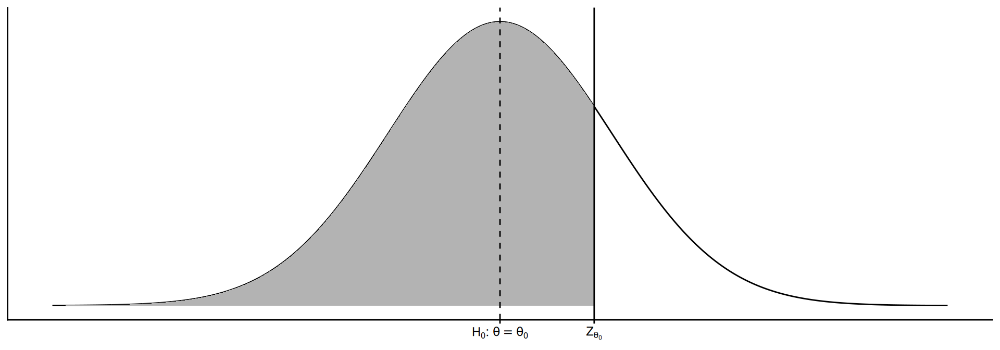
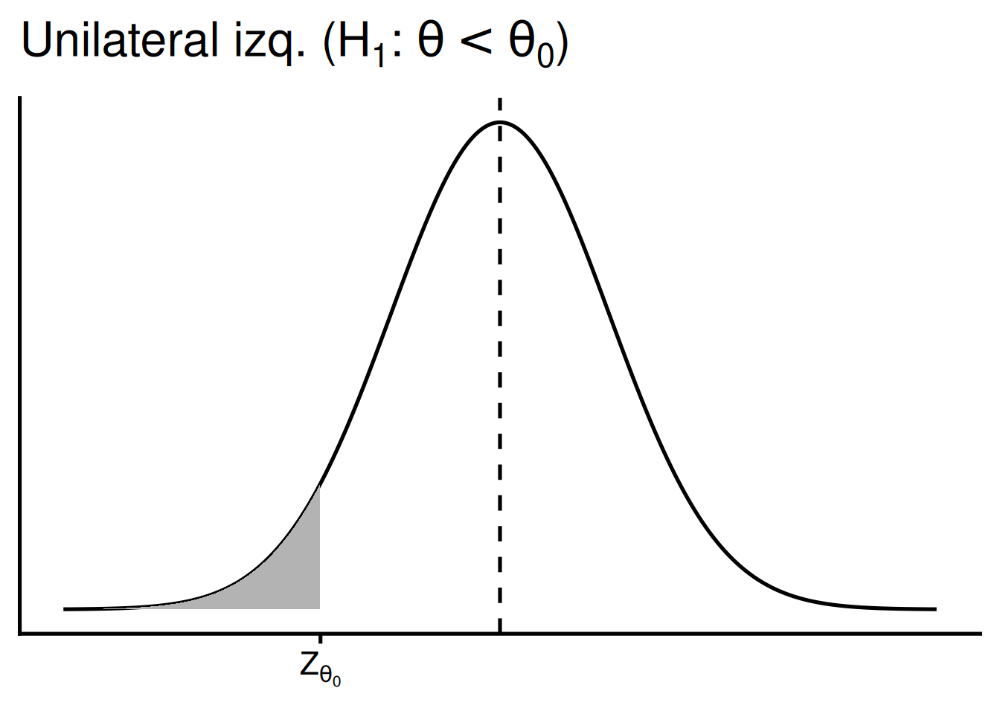
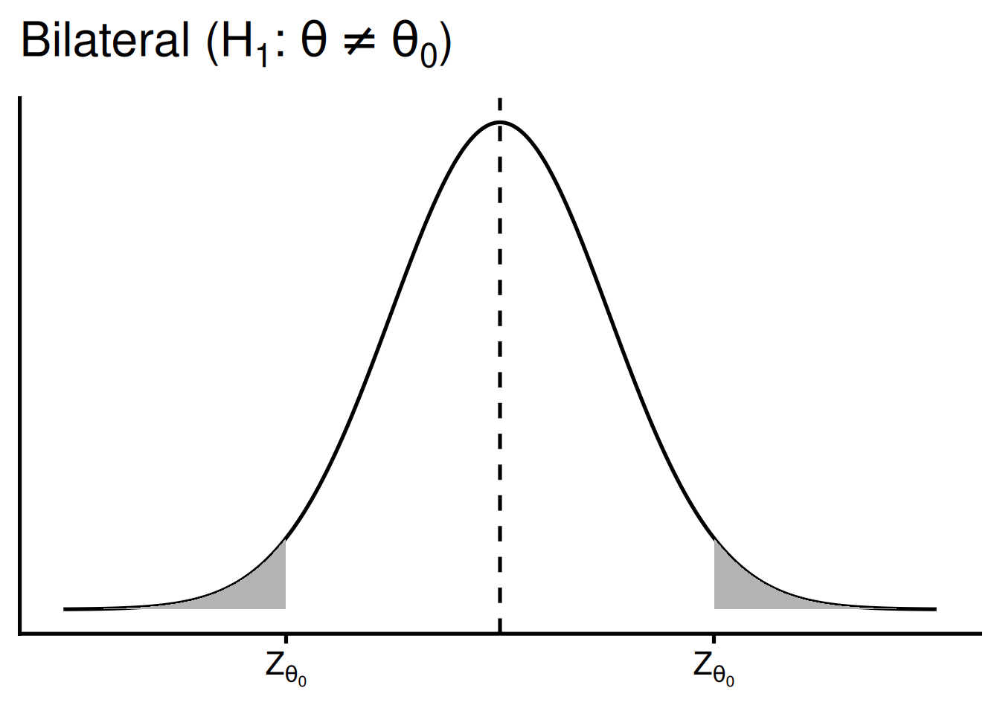
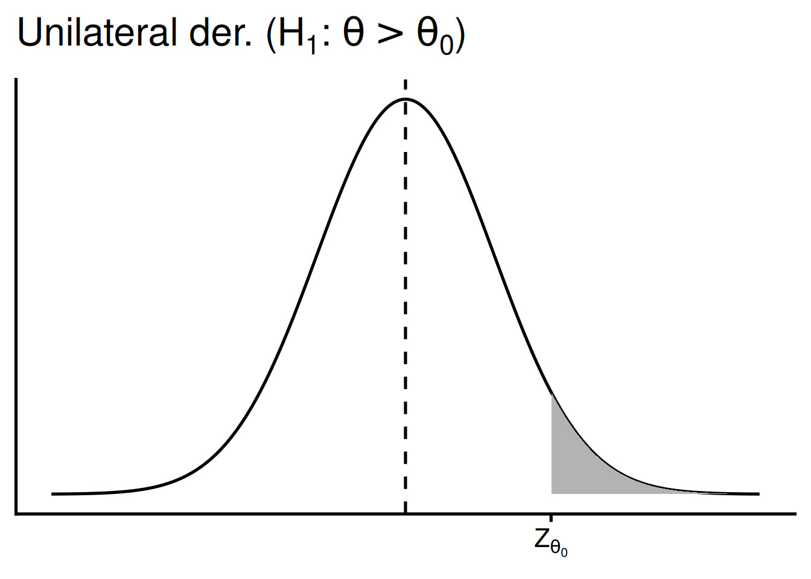
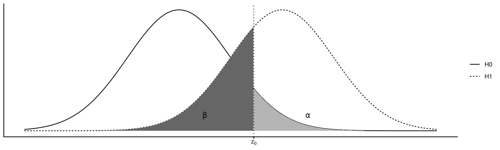
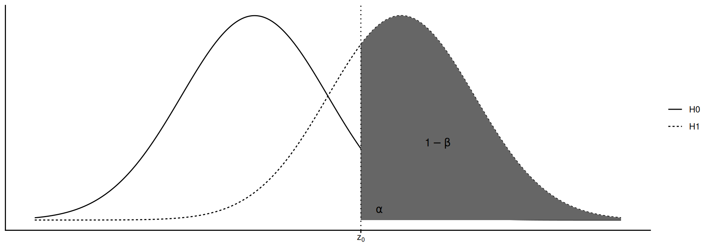
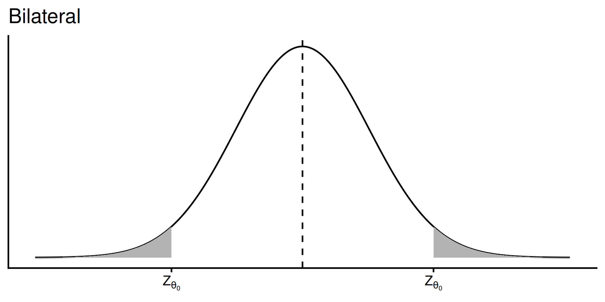
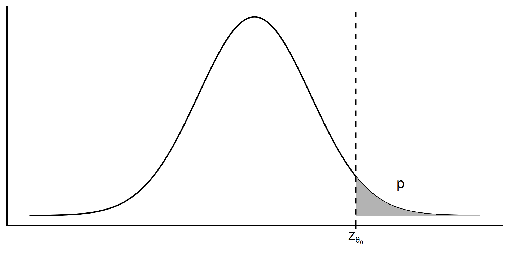
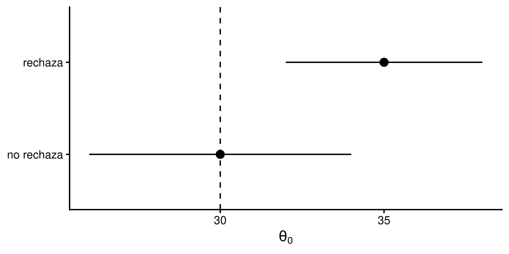

Inferencia: Prueba de Hipótesis (una muestra)
Estadística Básica | 2026
Hoja de ruta
- Inferencia estadística
- Repaso de generalidades (clase anterior)
- Prueba de hipótesis:
- Generalidades
- Una media poblacional: \(\sigma\) conocido o desconocido
- Una varianza
- Una proporción
Preparando R/RStudio
Abrir proyecto en RStudio
Cargar los paquetes a usar usando
library()
Prueba de Hipótesis
Test estadístico
Se basa en el concepto de prueba por contradicción: hay una idea previa del valor del parámetro poblacional y se toman datos para corroborarla.
Pasos
- Formulación de \(H_0\) y \(H_1\)
- Cálculo del estadístico de prueba apropiado
- Determinación de la zona de rechazo y regla de decisión
- Chequeo de supuestos
- Conclusiones
Hipótesis = modelos
Se plantean dos modelos para explicar el fenómeno en estudio (la población):
\[H_0: \theta = \theta_0 \quad \text{vs} \quad H_1: \theta \ne \theta_0\]
- Hipótesis nula \(H_0\): se usa para construir el modelo con la idea de verificar su falsedad (pensamiento escéptico)
- Hipótesis alternativa \(H_1\): alternativa a considerar en caso de rechazar \(H_0\)
La evidencia empírica que sustenta o rechaza \(H_0\) proviene de una muestra aleatoria
Cómo formular las hipótesis
- La afirmación de que \(\theta\) es igual a un valor siempre va en \(H_0\) (el valor nulo \(\theta_0\))
- La afirmación que se quiere soportar o detectar con los datos es la \(H_1\)
- La negación de \(H_1\) es la \(H_0\)
- \(H_0\) se presume correcta a menos que haya evidencia suficiente para rechazarla en favor de \(H_1\)
Ejemplos — contenido de N total de suelos de una región:
¿Es igual o inferior a 0.12%? \[H_0: \mu \le 0.12\% \quad \text{vs} \quad H_1: \mu > 0.12\%\]
¿Es menor a 0.12%? \[H_0: \mu \ge 0.12\% \quad \text{vs} \quad H_1: \mu < 0.12\%\]
¿Es igual a 0.12%? \[H_0: \mu = 0.12\% \quad \text{vs} \quad H_1: \mu \ne 0.12\%\]
Estadístico de prueba
Valor estandarizado calculado (es una función) a partir de los datos de la muestra.
Es una variable aleatoria con una distribución de probabilidades asociada, determinada por \(H_0\) y los supuestos

La forma del estadístico depende del parámetro sobre el que se quiere hacer inferencia
Zona de rechazo
Valores del estadístico de prueba que soportan \(H_1\) y contradicen \(H_0\), es decir, permiten rechazar \(H_0\)



Hacer click para recorrer los tres casos: unilateral izquierda, bilateral, unilateral derecha
La \(H_1\) determina dónde está la zona de rechazo (bilateral o unilateral) y el sentido de la interpretación
Errores
| Decisión | \(H_0\) es cierta | \(H_0\) es falsa |
|---|---|---|
| se rechaza \(H_0\) | Error Tipo I | No hay error |
| no se rechaza \(H_0\) | No hay error | Error Tipo II |

\[P(\text{rechazar } H_0 | H_0 \text{ cierta}) = \alpha \qquad P(\text{no rechazar } H_0 | H_0 \text{ falsa}) = \beta\]
\(\alpha\) y \(\beta\) dependen de la distancia entre \(\theta_0\) y \(\theta_1\), la variabilidad de la población y el tamaño de muestra
Para igual \(n\), \(\alpha\) y \(\beta\) están inversamente relacionados: el experimentador fija la zona de rechazo en función de \(\alpha\)
Potencia \(1-\beta\)
Es la proporción de veces que la prueba va a rechazar \(H_0\) cuando realmente es falsa

\[P(\text{rechazar }H_0 | H_0 \text{ es falsa}) = 1 - \beta\]
Para un \(\alpha\) dado, la potencia se halla utilizando la distribución que asume \(H_1\) como verdadera
Regla de decisión — Opción 1: valores críticos
Fijar \(\alpha\) y, calculando valores críticos del estadístico \(Z_\theta\), delimitar las zonas de rechazo
Bilateral
- Si \(|Z_\theta| \ge z_{1-\alpha/2}\): se rechaza \(H_0\)
Unilateral izquierda
- Si \(Z_\theta < z_{\alpha}\): se rechaza \(H_0\)
Unilateral derecha
- Si \(Z_\theta > z_{1-\alpha}\): se rechaza \(H_0\)

Regla de decisión — Opción 2: valor p
Asumiendo \(H_0\) y la distribución del estadístico, se calcula la probabilidad \(p\) de ocurrencia de un valor igual o más extremo
\[P(Z \ge Z_{\theta_0} | H_0) = p\]

- Si \(p > \alpha\): no hay evidencia para rechazar \(H_0\) (no se prueba que sea verdadera)
- Si \(p \le \alpha\): hay evidencia para rechazar \(H_0\) (no se prueba que \(H_1\) sea verdadera)
¿Qué es el valor p? Es la probabilidad de que, repitiendo el muestreo, el estadístico de prueba a obtener sea igual o más extremo que el observado, asumiendo que \(H_0\) es cierta.
Si los datos no concuerdan con el modelo nulo, hay evidencia para descartarlo en favor del alternativo
Regla de decisión — Opción 3: relación con el IC
Existe una relación entre \(\text{IC}_{1-\alpha}\) y una PH, ya que \(\alpha\) es el complemento de \((1-\alpha)\)
- Un \(\text{IC}_{1-\alpha}\) define un rango de valores que incluye al verdadero \(\theta\) con confianza \((1-\alpha)\)
- Una PH define los valores de \(\hat\theta\) que no coinciden con el valor hipotético de \(H_0\)
Si \(\theta_0\) es el valor establecido en \(H_0\):
- si \(\theta_0 \notin \text{IC}_{1-\alpha}\): con significancia \(\alpha\) se rechaza \(H_0\)
- si \(\theta_0 \in \text{IC}_{1-\alpha}\): equivale a no rechazar \(H_0\) con significancia \(\alpha\)

Conclusiones
La conclusión consta de 3 partes fundamentales:
- ¿Cuál es la decisión sobre \(H_0\)?
- ¿Por qué se llega a esa decisión? (valor p, o valor crítico y significancia)
- Interpretación en el contexto del problema
Partes 1 + 2 = conclusión estadística
Partes 1 + 2 + 3 = inferencia completa
Note
Bonus track: agregar información del IC del valor estimado
Prueba de hipótesis para un parámetro
Media poblacional \(\mu\)
- con \(\sigma\) conocido
- con \(\sigma\) desconocido
Varianza poblacional \(\sigma^2\)
Proporción poblacional \(\pi\)
PH sobre \(\mu\) con \(\sigma\) conocido
Hipótesis
\[H_0: \mu = \mu_0 \quad \text{vs} \quad H_1: \mu \ne \mu_0 \\ H_0: \mu \ge \mu_0 \quad \text{vs} \quad H_1: \mu < \mu_0 \\ H_0: \mu \le \mu_0 \quad \text{vs} \quad H_1: \mu > \mu_0\]
Estadístico de prueba
\[Z = \dfrac{\bar{X} - \mu_0}{\sigma/\sqrt{n}} \sim N(0,1)\]
Regla de decisión
- Rechazar \(H_0\) si \(|z| \ge z_{1-\alpha/2}\)
- Rechazar \(H_0\) si \(z \le z_{\alpha}\)
- Rechazar \(H_0\) si \(z \ge z_{1-\alpha}\)
Note
También se puede comparar el valor p con \(\alpha\), o el \(\text{IC}_{1-\alpha}\) con \(\mu_0\)
Ejemplo
Ejemplo
Se desea determinar si la CIC media de los suelos de una región es inferior a 12 cmolc kg-1. Se toma una muestra de 20 lotes. Se sabe que la CIC tiene distribución normal con \(\sigma = 2\) cmolc kg-1.
\[H_0: \mu = 12 \quad \text{vs} \quad H_1: \mu < 12\]
Datos: \(n = 20\), \(\bar{X} = 10.38\), \(\sigma = 2\), \(\alpha = 0.05\)
Cálculo manual:
\[Z = \dfrac{10.38 - 12}{2/\sqrt{20}} = -3.62\]
Como \(Z = -3.62 < -1.64\), cae en la zona de rechazo (equivalente: 10^{-4} \(< 0.05\))
Conclusión: existe evidencia suficiente para rechazar \(H_0\) (p = 1e-04), por lo tanto la CIC de los lotes es inferior a 12 cmolc kg-1.
PH sobre \(\mu\) con \(\sigma\) desconocido
Hipótesis
\[H_0: \mu = \mu_0 \quad \text{vs} \quad H_1: \mu \ne \mu_0 \\ H_0: \mu \ge \mu_0 \quad \text{vs} \quad H_1: \mu < \mu_0 \\ H_0: \mu \le \mu_0 \quad \text{vs} \quad H_1: \mu > \mu_0\]
Estadístico de prueba
\[t = \dfrac{\bar{X} - \mu_0}{s/\sqrt{n}} \sim t_{n-1}\]
Regla de decisión
- Rechazar \(H_0\) si \(|t| \ge t_{1-\alpha/2, n-1}\)
- Rechazar \(H_0\) si \(t \le t_{\alpha, n-1}\)
- Rechazar \(H_0\) si \(t \ge t_{1-\alpha, n-1}\)
Ejemplo
Ejemplo
Con los mismos datos de CIC, ahora sin conocer \(\sigma\), se quiere probar si la media es distinta de 12 cmolc kg-1.
\[H_0: \mu = 12 \quad \text{vs} \quad H_1: \mu \ne 12\]
Datos: \(n = 20\), \(\bar{X} = 10.38\), \(s = 1.83\), \(\alpha = 0.05\)
Cálculo manual:
\[t = \dfrac{10.38 - 12}{1.83/\sqrt{20}} = -3.96\]
Como \(|t| = 3.96 \ge 2.09\), cae en la zona de rechazo
Conclusión: existe evidencia suficiente para rechazar \(H_0\) (P = 8^{-4}), por lo tanto el CIC medio es distinto de 12 cmolc kg-1. Con 95% de confianza, el verdadero valor está en el IC reportado por t.test().
Función t.test()
La función t.test() permite realizar PH para una o dos medias
Argumentos principales (una muestra):
x: vector con los datos de la muestramu: valor \(\mu_0\) hipotetizado en \(H_0\)alternative:"two.sided"(default),"less"o"greater", según \(H_1\)conf.level: nivel de confianza del IC reportado (default 0.95)
PH sobre \(\sigma^2\)
Hipótesis
\[H_0: \sigma^2 = \sigma^2_0 \quad \text{vs} \quad H_1: \sigma^2 \ne \sigma^2_0 \\ H_0: \sigma^2 \ge \sigma^2_0 \quad \text{vs} \quad H_1: \sigma^2 < \sigma^2_0 \\ H_0: \sigma^2 \le \sigma^2_0 \quad \text{vs} \quad H_1: \sigma^2 > \sigma^2_0\]
Estadístico de prueba
\[X^2 = \dfrac{(n-1)s^2}{\sigma^2_0} \sim \chi^2_{n-1}\]
Regla de decisión
- Rechazar \(H_0\) si \(X^2 \le \chi^2_{\alpha/2, n-1}\) o \(X^2 \ge \chi^2_{1-\alpha/2, n-1}\)
- Rechazar \(H_0\) si \(X^2 \le \chi^2_{\alpha, n-1}\)
- Rechazar \(H_0\) si \(X^2 \ge \chi^2_{1-\alpha, n-1}\)
Note
Esta prueba no está codificada en una función de R base
Ejemplo
Ejemplo
Con los datos de CIC, se quiere probar si la varianza es distinta de 4 (cmolc kg-1)².
\[H_0: \sigma^2 = 4 \quad \text{vs} \quad H_1: \sigma^2 \ne 4\]
Datos: \(n = 20\), \(s^2 = 3.35\), \(\alpha = 0.05\)
Cálculo manual:
\[X^2 = \dfrac{19 \times 3.35}{4} = 15.91\]
Como \(8.91 \le X^2 = 15.91 \le 32.85\), no cae en la zona de rechazo
Conclusión: no existe evidencia suficiente para rechazar \(H_0\) (P = 0.6731), por lo tanto la varianza de la CIC no sería distinta de 4 (cmolc kg-1)².
PH sobre \(\pi\)
Hipótesis
\[H_0: \pi = \pi_0 \quad \text{vs} \quad H_1: \pi \ne \pi_0 \\ H_0: \pi \ge \pi_0 \quad \text{vs} \quad H_1: \pi < \pi_0 \\ H_0: \pi \le \pi_0 \quad \text{vs} \quad H_1: \pi > \pi_0\]
Estadístico de prueba
\[Z = \dfrac{p - \pi_0}{\sqrt{\pi_0(1-\pi_0)/n}} \sim N(0,1)\]
Regla de decisión
- Rechazar \(H_0\) si \(|Z| \ge Z_{1-\alpha/2}\)
- Rechazar \(H_0\) si \(Z \le Z_{\alpha}\)
- Rechazar \(H_0\) si \(Z \ge Z_{1-\alpha}\)
Ejemplo
Ejemplo
Se desea saber si el porcentaje de bovinos infectados con Mycobacterium bovis en una región es superior a la proporción nacional (4%). Se seleccionaron 400 animales y 20 dieron positivo.
\[H_0: \pi \le 4\% \quad \text{vs} \quad H_1: \pi > 4\%\]
Datos: \(n = 400\), \(x = 20\), \(p = 20/400 = 0.05\), \(\pi_0 = 0.04\)
Cálculo manual:
\[Z = \dfrac{0.05 - 0.04}{\sqrt{0.04 \times 0.96/400}} = 1.02\]
Como \(Z = 1.02 < 1.64\), no cae en la zona de rechazo
Conclusión: no existe evidencia suficiente para rechazar \(H_0\) (P = 0.1537), por lo tanto el porcentaje de bovinos con tuberculosis en el distrito no es superior al 4%.